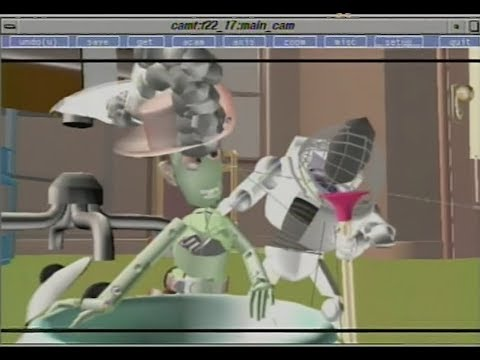

3D animatie begon pas heel laat met ontwikkelen. Pas rond de jaren 70 begonnen 3D effecten met de computer ontwikkelt te worden. Dit begon pas echt van start te gaan toen Pixar in contract met Disney de eerste volledige 3D-geanimeerde speelfilm had gemaakt. Hiervoor was 3D animatie nog slechts een droom, en werd het alleen nog gebruikt voor explosie effecten. Sinds er een toekomst werd gezien in de wereld van computer geanimeerde 3D-animatie is het veel ontwikkelt. Video games werden 3d, Films maakten met CGI complete karakters via de computer en de 3D films trokken veel publiek aan, met Pixar en Disney als pionier.  Vervolgens begon ook Dreamworks te experimenteren met 3D-animatie en daarmee werden ze een groot concurrent. Daarna ontwikkelden door de jaren heen veel 3D-animatie studio's waaronder Blue Sky, Illumination, Sony studio animation en de Warner Animation Group.